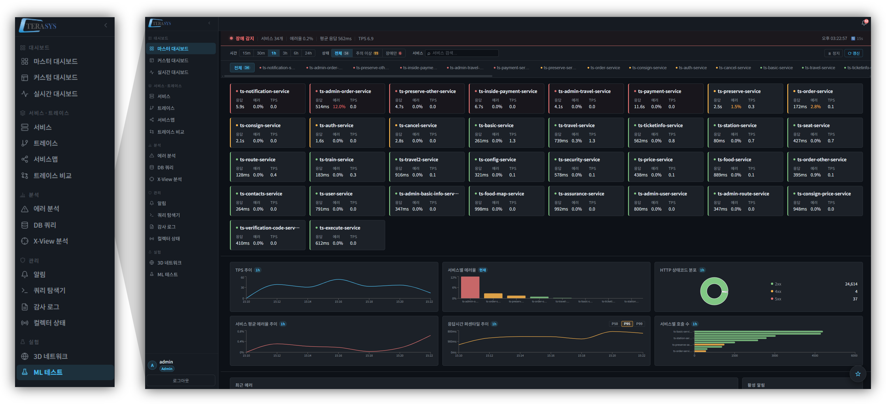
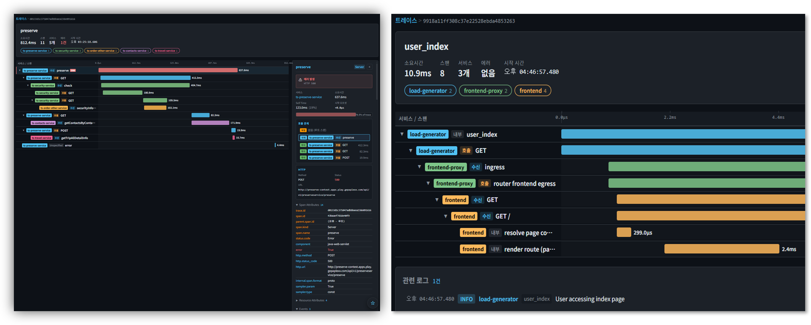
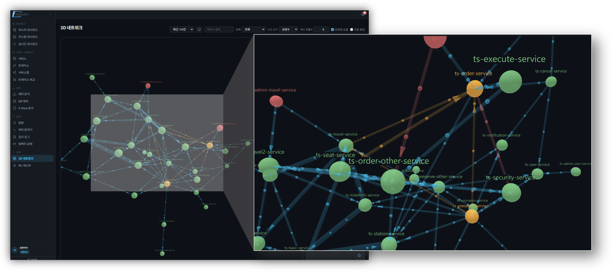
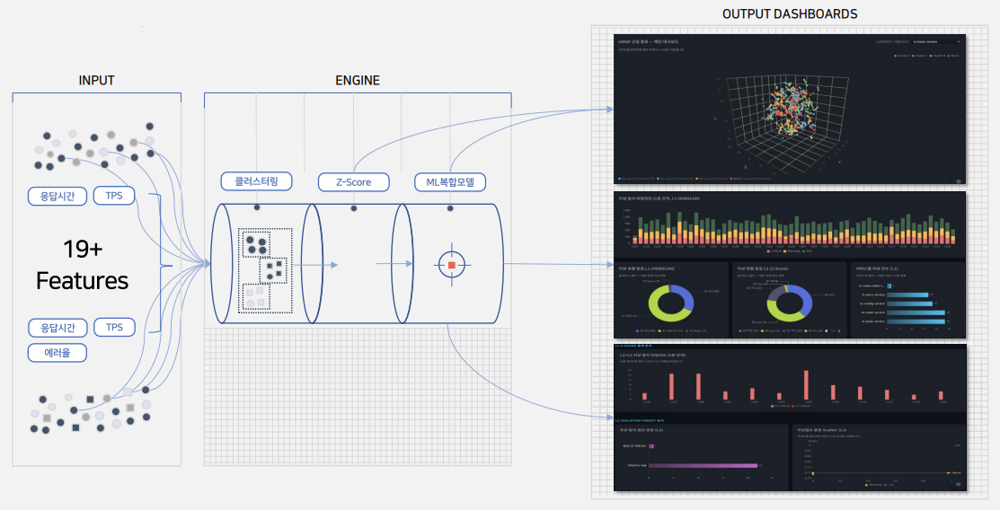
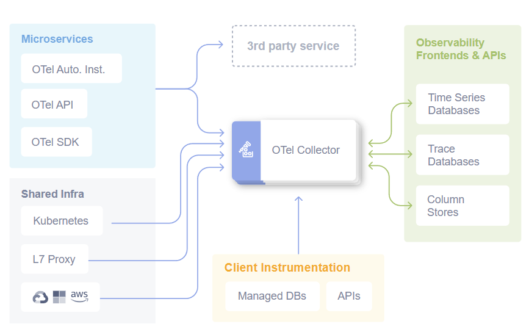

테라시스가 직접 설계한 OTel 표준 기반 온프레미스 APM 플랫폼. 빅데이터와 AI 추론을 결합해 애플리케이션 성능 저하부터 보안 위협 징후까지 실시간으로 탐지합니다.
오늘날의 보안 환경은 온프레미스에서 클라우드까지 그 경계가 무너지고 있으며, 관리해야 할 보안 데이터는 기하급수적으로 늘어나고 있습니다. 기존의 통합로그분석이나 보안관제 시스템은 파편화된 위협 대응과 성능의 한계로 인해 갈수록 고도화되는 사이버 공격을 방어하는 데 어려움을 겪고 있습니다.
OmniTrace는 OpenTelemetry 표준 + 빅데이터 + AI 추론이 결합된 애플리케이션 성능 모니터링 및 위협 징후 탐지 플랫폼입니다. 성능 가시성과 보안 가시성을 단일 플랫폼에서 통합 제공합니다.





Go · Python (ML/LLM)
React · TypeScript
ClickHouse · OpenTelemetry · OTel Collector (OCB)
Qwen2.5-14B (fine-tuned) · PyTorch
Docker · Nginx · GitHub Actions (self-hosted)